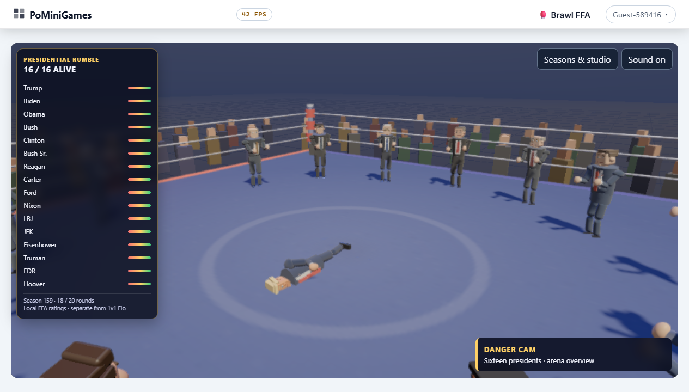
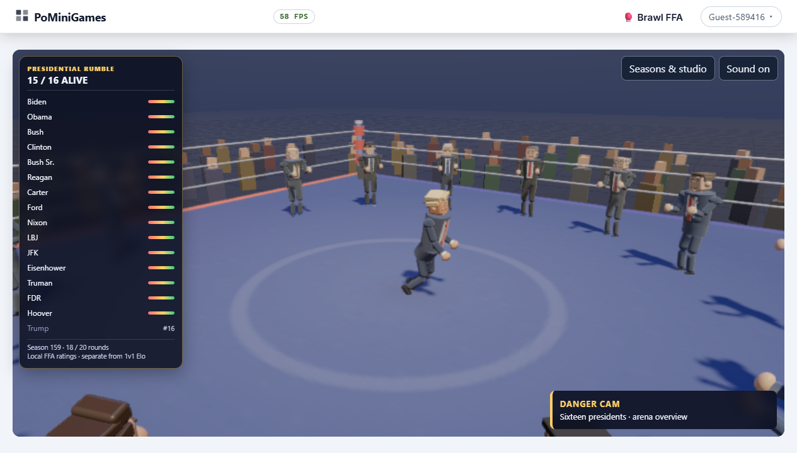
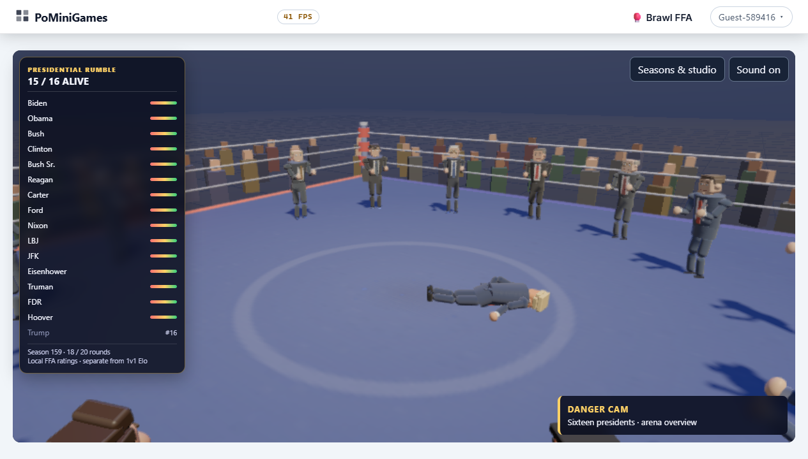

FFA knockouts: fall, do not snap
Uses the same eleven-body, ten-joint physics ragdoll as 1v1, scaled to the FFA fighters.
The killing hit carries into the tumble; bodies remain until the next round.

Before: reconstructed original instant sideways pose, with no physics-driven fall.

After: actual knockout at 183 ms. Independent limbs fall from the current pose with momentum.

Settled: gravity and joint constraints leave the fighter on the mat; the next round restores the standing guard immediately.